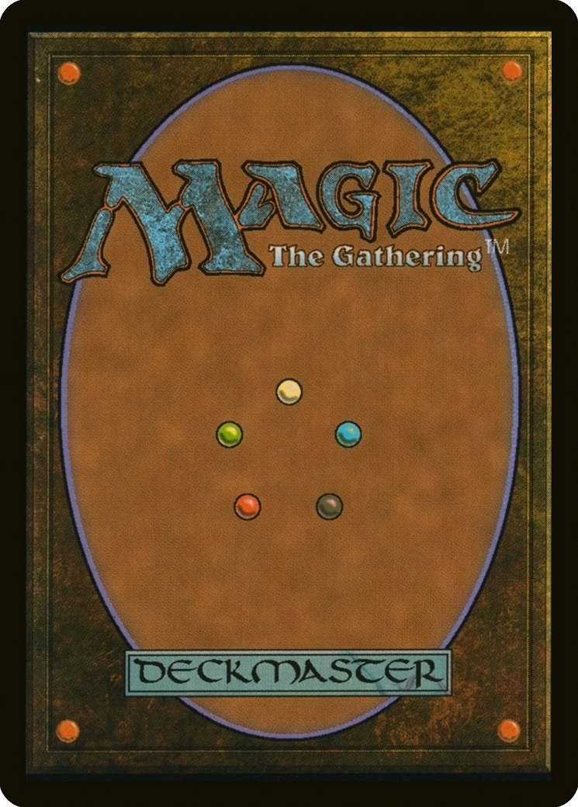

Magic The Gathering: Mana
Intro to Mana
Mana is the energy that is required in order to cast spells in MTG. It comes from lands that you control. Each land can produce one mana of a certain color each turn. This mana does not stack, so you must plan how to use it each turn. Sometimes it's good to leave certain mana untapped after your turn, as you can use that to cast instants that your opponent may not be expecting during their turn. Here, we will go over the five different colors of mana
White
White mana comes from plains. It is used to activate white spells. White creature spells are associated with first strike, double strike, flying, lifelink, and vigilance. White mana focuses on uniformity, morality, and order. White is allied with green and blue and is enemies with black and red.
Some mechanics commonly seen in white spells include:
- Damage prevention
- Protection
- Exile
- Life gain
- Enchantments
Blue

Blue mana comes from islands. It is used to activate blue spells. Blue creature spells are associated with flying, flash, and hexproof. Blue mana focuses on possibilities, dreams, and knowledge. Blue is allied with white and black and is enemies with red and green.
Some mechanics commonly seen in blue spells include:
- Card drawing
- Counterspells
- Stealing
- Technology
- Illusions
Black

Black mana comes from swamps. It is used to activate black spells. Black creature spells are associated with flash, lifelink, menace, deathtouch, and flying. Black mana focuses on ambition, power, and opportunity. Black is allied with blue and red and is enemies with white and green.
Some mechanics commonly seen in black spells include:
- Discarding
- Reanimation
- Regeneration
- Sacrifice
- Parasitism
Red
Red mana comes from mountains. It is used to activate red spells. Red creature spells are associated with menace, trample, haste, first strike, and double strike. Red mana focuses on rage, freedom, and adventure. Red is allied with black and green and is enemies with white and blue.
Some mechanics commonly seen in red spells include:
- Direct damage
- Firebreathing
- Haste
- Mana production
- Randomness
Green

Green mana comes from forests. It is used to activate green spells. Green creature spells are associated with vigilance, trample, haste, reach, and deathtouch. Green mana focuses on preservation, tradition, and instinct. Green is allied with white and red and is enemies with blue and black.
Some mechanics commonly seen in green spells include:
- Anti-flight
- Artifact destruction
- Creature tokens
- Temporary growth
- Luring
Fun Fact
This page's layout was inspired by the back of an MTG card
